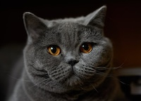
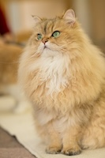
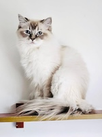
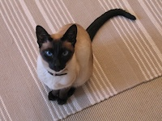
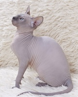

| Breed | Colors | Hair-length | Characteristics | Picture |
| British Shorthair | gray, orange, or white (any mixture) | short | affectionate, easy-going, calm |  |
| Persian | solid color: black, white, brown, tortoise shell (mulitcolor) | long | gentle, affectionate |  |
| Ragdoll | solid color: brown, orange, gray, cream | medium to long hair | friendly, easy-going, cuddly, social |  |
| Siamese | beige and black | short | social, intelligent, vocal |  |
| Sphynx | gray, pink | hairless | intelligent, social |  |